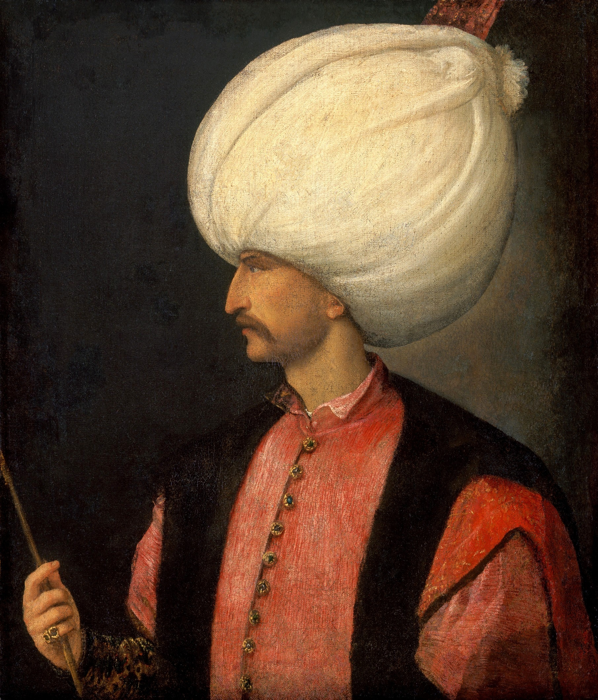

| önceki |  |
sonraki |
I. Süleyman (Kanunî Sultan Süleyman), Osmanlı İmparatorluğu'nun onuncu padişahıdır. Babası Yavuz Sultan Selim, annesi Ayşe Hafsa Sultan'dır. 46 yıl ile Osmanlı tarihinin en uzun süre tahtta kalan hükümdarıdır. Batı dünyasında "Muhteşem Süleyman" (The Magnificent), Doğu'da ise koyduğu adil kanunlar sebebiyle "Kanunî" unvanıyla anılmıştır. Osmanlı Devleti en parlak ve en güçlü dönemini onun devrinde yaşamıştır.
Büyük Fetihler ve Zirve Dönemi
Kanunî Sultan Süleyman, 13 büyük sefere bizzat ordunun başında komutanlık etmiştir:
- Belgrad ve Rodos'un Fethi (1521 – 1522): Orta Avrupa'nın kilidi sayılan Belgrad ve Akdeniz ticaretini tehdit eden Sen Jan Şövalyeleri'nin merkezi Rodos fethedildi.
- Mohaç Meydan Muharebesi (1526): Macar Krallığı ordusu yaklaşık 2 saat gibi rekor bir sürede tamamen imha edilmiş, Macaristan Osmanlı hakimiyetine girmiştir.
- Viyana Kuşatması ve Almanya Seferi (1529 – 1532): Avusturya ve Habsburg İmparatoru Şarlken üzerine yürünmüş, Viyana ilk kez kuşatılmıştır. 1533 İstanbul Antlaşması ile Avusturya Arşidükü Osmanlı Sadrazamına denk sayılmıştır.
- Preveze Deniz Zaferi (1538): Kaptan-ı Derya Barbaros Hayreddin Paşa komutasındaki Osmanlı donanması, Andrea Doria komutasındaki birleşik Haçlı donanmasını bozguna uğratmış; Akdeniz kesin bir Türk gölü olmuştur.
- Irakeyn Seferi (1534): Safevilere karşı yapılan seferle Bağdat, Basra ve Tebriz Osmanlı sınırlarına katılmıştır.
- Zigetvar Seferi ve Vefatı (1566): 71 yaşında çıktığı son seferinde, Zigetvar Kalesi'nin fethinden bir gün önce 7 Eylül 1566'da otağında vefat etmiştir.
Kültür, Sanat ve Kanunlar
Mimar Sinan'ın başmimarlığında Süleymaniye Camii ve Külliyesi inşa edilmiştir. Kanunî, "Muhibbî" mahlasıyla divan edebiyatının en çok şiir yazan şairlerinden biridir. Meşhur beyti tarihe kazınmıştır:
"Halk içinde mu'teber bir nesne yok devlet gibi / Olmaya devlet cihânda bir nefes sıhhat gibi."
Ailesi
- Eşleri:
- Hürrem Haseki Sultân (II. Selim, Şehzade Mehmed, Şehzade Bayezid, Şehzade Cihangir ve Mihrimah Sultan'ın annesi)
- Mâhidevrân Sultân (Şehzade Mustafa'nın annesi)
- Gülfem Hâtûn
- Fülane Hâtûn
- Erkek çocukları:
- Şehzade Mustafa (1515 – 1553)
- Şehzade Mehmed (1521 – 1543)
- II. Selim (Sarı Selim) (1524 – 1574)
- Şehzade Bayezid (1525 – 1561)
- Şehzade Cihangir (1531 – 1553)
- Şehzade Abdullah (küçük yaşta vefat etmiştir)
- Şehzade Murad
- Şehzade Mahmud
- Kız çocukları:
- Mihrimah Sultân (Sadrazam Damat Rüstem Paşa ile evlenmiştir)
- Raziye Sultân
Kanunî Sultan Süleyman hakkında daha fazla bilgi için buraya tıklayın.